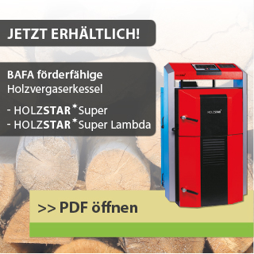
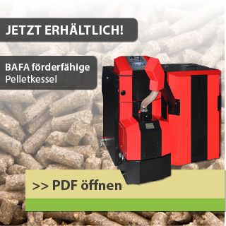
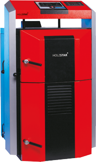
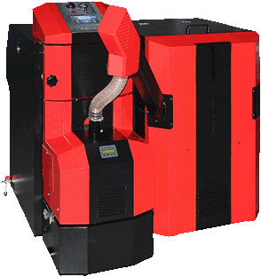

Gerne beraten wir Sie persönlich, telefonisch unter der Nummer +49 (0) 831 575 00 0 oder per E-Mail.
 Die Zuschüsse für Solarthermieanlagen, Biomasseanlagen und Wärmepumpen wurden deutlich erhöht.Hier können Sie sich über die aktuellen Förderrichtlinien in Deutschland informieren:
Zur Webseite des Bundesamtes für Wirtschaft und Ausfuhrkontrolle (BAFA)...
ATTACK SLX
Der "ATTACK SLX" in der Version "Profi" und "Lambda" ist ein sparsamer und umweltschonender Holzvergaserkessel. Er eignet sich für den Einsatz in Ein- und Mehrfamilienhäusern sowie in kleineren Betrieben und Werkstätten. Als Brennstoff dient trockenes Holz. Bei voller Nutzung der Brennkammer besteht die Möglichkeit einer ununterbrochenen Verbrennung über 8 bis 12 Stunden hinweg.
ATTACK SLX ProfiDer Holzvergaserkessel "SLX Profi" wird durch eine elektronische Regelung der Kesseltemperatur gesteuert. Die modulierende Betriebsweise des Kessels passt sich dem tatsächlichen Wärmebedarf an.
ATTACK SLX LambdaDer "SLX Lambda" ist mit einer fortschrittlichen Steuerung zur Optimierung des Verbrennungsvorgangs ausgestattet. Sie kann mithilfe der Sauerstoffmessung per Lambdasonde automatisch Kesseltemperatur, Abgastemperatur, Primär- und Sekundärluftzufuhr regulieren. Hierdurch werden die besten Emissionswerte und ein besonders hoher Wirkungsgrad erreicht. Alle wichtigen Parameter werden auf dem mehrzeiligen Display des Reglers angezeigt und können damit individuell eingestellt werden.

Staatliche Förderungen
Unsere Holzvergaser-Kessel sind qualitativ hochwertig und erfüllen sämtliche Bedingungen für staatliche Förderungen durch die BAFA.
| Spezifikationen | Einheiten | SLX 25 | SLX 30 | |||||||||||
|---|---|---|---|---|---|---|---|---|---|---|---|---|---|---|
| Nennleistung (Version Standard) | kW | 25 | 30 | |||||||||||
| Nennleistung (Vers. Profi, Vers. Lambda) | kW | 12,5 - 25 | 15 - 30 | |||||||||||
| Wärmetauschfläche | m² | 2.95 | 2.95 | |||||||||||
| Volumen der Ladekammer | dm³ | 200 | 200 | |||||||||||
| Maße der Ladetür | mm | 235 x 445 | 235 x 445 | |||||||||||
| Vorgeschriebener Kaminzug | Pa | 23 | 23 | |||||||||||
| Max. Betriebsüberdruck des Kessels | kPa | 250 | 250 | |||||||||||
| Kesselgewicht | kg | 570 | 570 | |||||||||||
| Durchmesser der Abzugskehle | mm | 150 | 150 | |||||||||||
| Kesselhöhe "A" | mm | 1472 | 1472 | |||||||||||
| Kesselbreite "B" | mm | 703 | 703 | |||||||||||
| Kesseltiefe "C" | mm | 1337 | 1337 | |||||||||||
| Länge der Ladekammer "D" | mm | 690 | 690 | |||||||||||
| Vorlaufdurchmesser | Zoll | G6/4" | G6/4" | |||||||||||
| Rücklaufdurchmesser | Zoll | G6/4" | G6/4" | |||||||||||
| Deckungsgrad | IP | 21 | 21 | |||||||||||
| El. Leistungsverbrauch | W | 42 | 42 | |||||||||||
| Kessel-Wirkungsgrad | % | 91.6 | 90.3 | |||||||||||
| Kesselklasse | 5 | 5 | ||||||||||||
| Abgastemperatur bei Nennleistung | °C | 170 | 175 | |||||||||||
| Gewichtdurchgang der Abgase bei | kg/s | 0,020 | 0,021 | |||||||||||
| Nennleistung | ||||||||||||||
| Max. Lärmpegel | dB | 65 | 65 | |||||||||||
| Klasse und Typ der Brennstoff | Holz mit Feuchtigkeit von 12% - max. 20%, Ø 50–150 mm |
Holz mit Feuchtigkeit von 12% - max. 20%, Ø 50–150 mm |
||||||||||||
| Durchschn. Brennstoffverbrauch | kg/h | 6.50 | 7.8 | |||||||||||
| Orientierungs-Holzverbrauch pro Session | 1 kW = 1 m³ | 1 kW = 1 m³ | ||||||||||||
| Max. Scheitholzlänge | mm | 650 | 650 | |||||||||||
| Wasservolumen im Kessel | Liter | 117 | 117 | |||||||||||
| Wasservolumen im Kessel | Liter | 2000 | 2200 | |||||||||||
| Spannung | V/Hz | ~230/50 | ~230/50 | |||||||||||
| Einstellungsskale der | °C | 65 – 85 | 65 – 85 | |||||||||||
| Heizwassertemperatur | ||||||||||||||
| Einstellungsskala der Raumtemperatur | °C | 10 - 27 | 10 - 27 | |||||||||||
| Belastbarkeit der Regelkontakte des | A/V | 2/230 | 2/230 | |||||||||||
| Kessels (Version Profi) | ||||||||||||||
ATTACK PELLET 30 AUTOMATIC

Der „PELLET 30“ ist ein moderner, sparsamer und umweltschonender Pelletkessel. Er ist für Ein- und Mehrfamilienhäuser sowie kleine Betriebe bestens geeignet. Als Brennstoff können Holzpellets in bewährter DIN-Qualität verwendet werden. Das Herzstück des Kessels ist der wassergekühlte Kesselkörper, der aus 4 bis 6 mm dickem Kesselstahl geschweißt ist. Dies garantiert eine hohe Lebensdauer.
ZubehörEs besteht die Möglichkeit, einen Pelletbehälter mit 330 Liter Füllvolumen zu bestellen. Je nach räumlicher Situation kann der Kessel auch aus einem bis zu 5 m entfernten stehenden Behälter beschickt werden. Eine weitere Alternative hierzu ist ein externer Gewebetank (Big-Bag).
Das PELLET Model „ PELLET 30 AUTOMATIC“ ist mit einem automatischen Ascheaustragsystem ausgestattet. Je nach Kesselbetrieb ist eine Reinigung nur einmal pro Heizsaison notwendig.

Staatliche Förderungen
Unsere Pelletkessel sind qualitativ hochwertig und erfüllen sämtliche Bedingungen für staatliche Förderungen durch die BAFA.
| Spezifikationen | Einheiten | Pellet 30 | ||||||||
|---|---|---|---|---|---|---|---|---|---|---|
| Nennleistung | kW | 30 | ||||||||
| Skala der Leistungseinstellungen | kW | 8 bis 30 | ||||||||
| Wärmetauschfläche | m² | 1.9 | ||||||||
| Vorgeschriebener Kaminzug | Pa | 15 bis 20 | ||||||||
| max. Betriebsüberdruck des Heizwassers | kPa | 250 | ||||||||
| Druckverlust an der Seite des Wassers | Pa | 152 (T = 10K),
38 (T = 20K) |
||||||||
| Kesselgewicht | kg | 355 | ||||||||
| Durchmesser vom Kaminstutzen | mm | 150 | ||||||||
| Kesselhöhe | mm | 1220 | ||||||||
| Kesselbreite | mm | 575 | ||||||||
| Kesseltiefe | mm | 1250 | ||||||||
| Schutz der elektrischen Teile | IP | IP 40 | ||||||||
| max. Elektrischer Kesselkraftbedarf (bei Zündung) | W | 600 | ||||||||
| Elektrischer Kraftbedarf während des Betriebs | W | 90 | ||||||||
| Kesselwirkungsgrad | % | 90,6 | ||||||||
| Kesselklasse gemäß Emissionen CO (laut EN 303-5) | - | 5 | ||||||||
| Abgastemperatur bei Nennleistung | °C | 143 | ||||||||
| Vorgeschriebener Brennstoff | - | Holzpellets: Ø = 6 bis 10 mm,
l = max. 35mm |
||||||||
| Durchschnittlicher Brennstoffverbrauch | kg/h | 2,4 bis 6,9 | ||||||||
| Wasserinhalt im Kessel | L | 62 | ||||||||
| Skala der eingestellten Heizwassertemperatur | °C | 60 bis 90 | ||||||||
| Anschlussspannung | V / Hz | 230 / 50 | ||||||||